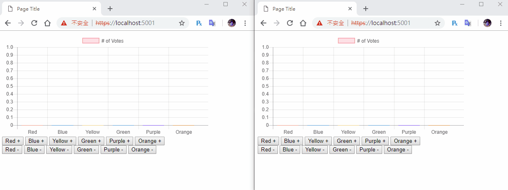

[鐵人賽Day17] 實作一個即時投票系統 (2) - 使用signalR同步投票
文章目錄
今天要來把即時投票系統跟SignalR連線囉！
基本上跟塗鴉板也是差不多，但是投票系統應該需要自訂投票的選項和建立投票的種類，這個部份我們需要去設計物件來達成，難度會高一些，但今天還不會講就是，先把連線的處理準備好， 明天再講這個部分。
後端的處理
後端我們需要建立3個東西VoteHub、VoteService、VoteModel
建立VoteModel
VotwModel用來當作一場投票的容器，大概需要投票編號、投票名稱、建立者、投票選項、投票數、開始時間、結束時間，大概這些，比較要注意的是投票選項和投票數
，這2個是我們一開始無法確認數量為多少，名稱也不清楚，我想了想使用C# 的 Dictory來處理這部分最適合，因為本身是一個key值對應一個value，不會有重複選項建立的問題，要注意的
大概就是這個，以下設計出來後大概的樣子。
using System;
using System.Collections.Generic;
namespace VoteWeb.Models
{
public class VoteModel
{
public int id { get; set; }
public string voteName { get; set; }
public string creator { get; set; }
public DateTime startDate { get; set; }
public DateTime endDate { get; set; }
public Dictionary<string, int> voteSelect { get; set; }
}
}
建立VoteService
VoteServie跟上一個實作DrawServie不太一樣的地方是，我們需要多建立投票及新增投票選項的方法還有添加投票的方法，需要注意的是Dictory的泛型物件，他不能直接從直接從
屬性修改，只能以陣列方式修改，請看下面範例註解的地方，還有我們建立一個Test投票方法CreateTestVote在裡面。
using System;
using System.Collections.Generic;
using VoteWeb.Models;
namespace VoteWeb.Services
{
public class VoteService
{
private List<VoteModel> voteModelList;
private int i = 0;
public VoteService()
{
voteModelList = new List<VoteModel>();
CreateTestVote();
}
// 建立測試用投票
public void CreateTestVote(){
VoteModel voteModel = new VoteModel();
voteModel.id = 1;
voteModel.voteName = "Test Vote";
voteModel.creator = "me";
voteModel.startDate = DateTime.Now;
string[] voteSelect = { "Red", "Blue", "Yellow", "Green", "Purple", "Orange" };
Dictionary<string, int> _voteSelect = new Dictionary<string, int>();
for (int i = 0; i < voteSelect.Length; i++)
{
_voteSelect.Add(voteSelect[i], 0);
}
voteModel.voteSelect = _voteSelect;
voteModelList.Add(voteModel);
}
// 取得投票Model
public VoteModel GetVoteModel(string voteName)
{
for (int i = 0; i < voteModelList.Count; i++)
{
if (voteModelList[i].voteName == voteName)
{
return voteModelList[i];
}
}
return new VoteModel();
}
// 建立新的投票
public void CreateVote(VoteModel voteModel)
{
i++;
voteModel.id = i;
voteModelList.Add(voteModel);
}
// 新增投票選項
public void AddVoteSelect(string voteName, string selectName)
{
for (int i = 0; i < voteModelList.Count; i++)
{
if (voteModelList[i].voteName == voteName)
{
voteModelList[i].voteSelect.Add(selectName, 0);
}
}
}
// 投票
public void AddVoteSelectCount(string voteName, string selectName)
{
foreach (var voteModel in voteModelList)
{
if (voteModel.voteName == voteName)
{
foreach (var voteSelect in voteModel.voteSelect)
{
if (voteSelect.Key == selectName)
{
voteModel.voteSelect[selectName] = voteSelect.Value + 1;
break;
}
}
}
}
}
// 反對票
public void SubVoteSelectCount(string voteName, string selectName)
{
foreach (var voteModel in voteModelList)
{
if (voteModel.voteName == voteName)
{
foreach (var voteSelect in voteModel.voteSelect)
{
if (voteSelect.Key == selectName)
{
voteModel.voteSelect[selectName] = voteSelect.Value - 1;
break;
}
}
}
}
}
}
}
建立VoteHub
先建立VoteHub.cs，Hub在建構子先接收VoteService，再建立取得投票內容，這個方法傳給自己就好，然後投票和反對票則是傳給所有人還有這2個接收的事件一樣就行，不需要特別寫2種。
using System;
using Microsoft.AspNetCore.SignalR;
using VoteWeb.Models;
using VoteWeb.Services;
using System.Threading.Tasks;
using System.Collections.Generic;
namespace VoteWeb.Hubs
{
public class VoteHub : Hub
{
private VoteService _voteService;
public VoteHub(VoteService voteService)
{
_voteService = voteService;
}
public async Task GetVote(string voteName)
{
await Clients.Caller.SendAsync("ReceiveVote", _voteService.GetVoteModel(voteName));
}
public async Task AddVoteSelectCount(string voteName, string voteSelect)
{
_voteService.AddVoteSelectCount(voteName, voteSelect);
var temp = _voteService.GetVoteModel(voteName);
int count = 0;
foreach (var _voteSelect in temp.voteSelect)
{
if (_voteSelect.Key == voteSelect)
{
count = _voteSelect.Value;
}
}
await Clients.All.SendAsync("ReceiveVoteSelectCount", count, voteSelect);
}
public async Task SubVoteSelectCount(string voteName, string voteSelect)
{
_voteService.SubVoteSelectCount(voteName, voteSelect);
var temp = _voteService.GetVoteModel(voteName);
int count = 0;
foreach (var _voteSelect in temp.voteSelect)
{
if (_voteSelect.Key == voteSelect)
{
count = _voteSelect.Value;
}
}
await Clients.All.SendAsync("ReceiveVoteSelectCount", count, voteSelect);
}
}
}
後端最後在Startup.cs引用Hub和Service
using VoteWeb.Hubs;
using VoteWeb.Services;
註冊VoteService和signalR router
public void ConfigureServices(IServiceCollection services)
{
services.AddSingleton<VoteService>();
services.AddSignalR();
}
// This method gets called by the runtime. Use this method to configure the HTTP request pipeline.
public void Configure(IApplicationBuilder app, IHostingEnvironment env)
{
if (env.IsDevelopment())
{
app.UseDeveloperExceptionPage();
}
app.UseSignalR(routes =>
{
routes.MapHub<VoteHub>("/voteHub");
});
app.UseDefaultFiles();
app.UseStaticFiles();
}
前端的部分
首先報表的Data拉出來做一個變數，所以chartData裡面的data改成這樣
var data = [];
var chartData = {
type: 'bar',
data: {
labels: ["Red", "Blue", "Yellow", "Green", "Purple", "Orange"],
datasets: [{
label: '# of Votes',
data: data,
backgroundColor: [
'rgba(255, 99, 132, 0.2)',
'rgba(54, 162, 235, 0.2)',
'rgba(255, 206, 86, 0.2)',
'rgba(75, 192, 192, 0.2)',
'rgba(153, 102, 255, 0.2)',
'rgba(255, 159, 64, 0.2)'
],
borderColor: [
'rgba(255,99,132,1)',
'rgba(54, 162, 235, 1)',
'rgba(255, 206, 86, 1)',
'rgba(75, 192, 192, 1)',
'rgba(153, 102, 255, 1)',
'rgba(255, 159, 64, 1)'
],
borderWidth: 1
}]
},
options: {
scales: {
yAxes: [{
ticks: {
beginAtZero: true
}
}]
}
}
}
再來建立基本的連線，記得SignalR JS函式庫也要引入，連接完成後取得投票資料GetVote，connection.on("ReceiveVote")接受到報表資料後，array.push()進變數內，完成後在開始畫出圖表。
var connection = new signalR.HubConnectionBuilder().withUrl("/voteHub").build();
var myChart;
// 連接事件
connection.start()
.then(function () {
connection.invoke("GetVote", 'Test Vote').catch(function (err) {
return console.error(err.toString());
});
})
.catch(function (err) {
return console.error(err.toString());
});
connection.on("ReceiveVote", function (json) {
data.push(json.voteSelect.red);
data.push(json.voteSelect.blue);
data.push(json.voteSelect.yellow);
data.push(json.voteSelect.green);
data.push(json.voteSelect.purple);
data.push(json.voteSelect.orange);
myChart = new Chart(ctx, chartData);
});
建立投票及反對票的函數，接收回來由於data只是一個陣列，這時就要利用label的資料來搜尋是在哪個位置，使用indexOf就行了！
function AddVoteSelect(voteSelect) {
connection.invoke("AddVoteSelectCount", 'Test Vote', voteSelect).catch(function (err) {
return console.error(err.toString());
});
}
function SubVoteSelect(voteSelect) {
connection.invoke("SubVoteSelectCount", 'Test Vote', voteSelect).catch(function (err) {
return console.error(err.toString());
});
}
connection.on("ReceiveVoteSelectCount", function (json, voteSelect) {
var index = chartData.data.labels.indexOf(voteSelect);
chartData.data.datasets[0].data[index] = json;
myChart.update();
});
最後在修改按鈕事件就大功告成！
red.onclick = function () {
AddVoteSelect('Red');
}
blue.onclick = function () {
AddVoteSelect('Blue');
}
yellow.onclick = function () {
AddVoteSelect('Yellow');
}
green.onclick = function () {
AddVoteSelect('Green');
}
purple.onclick = function () {
AddVoteSelect('Purple');
}
orange.onclick = function () {
AddVoteSelect('Orange');
}
// 反對票事件
red2.onclick = function () {
SubVoteSelect('Red');
}
blue2.onclick = function () {
SubVoteSelect('Blue');
}
yellow2.onclick = function () {
SubVoteSelect('Yellow');
}
green2.onclick = function () {
SubVoteSelect('Green');
}
purple2.onclick = function () {
SubVoteSelect('Purple');
}
orange2.onclick = function () {
SubVoteSelect('Orange');
}
還有記得安裝前端signal套件就完成啦！
忘記的往回看Day3啊！XD
DEMO
